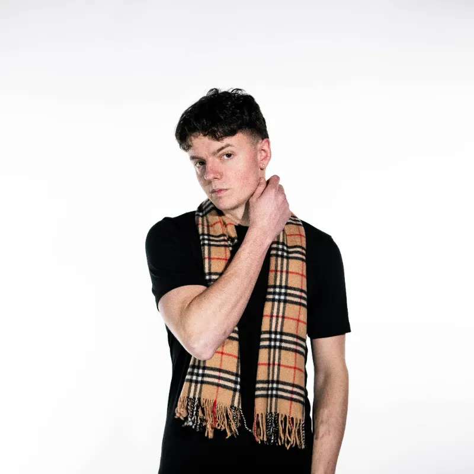
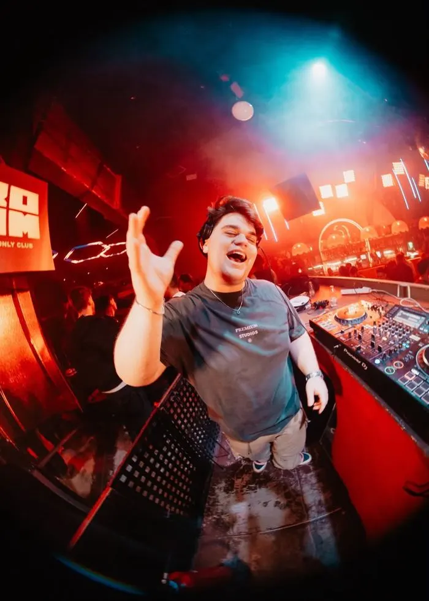
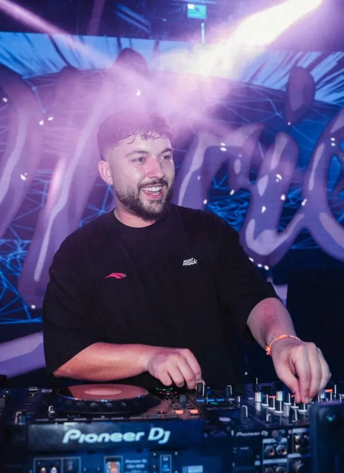

11 horas de música
As portas abren ás 19:00 e a música non para ata as 06:00: directos de rap e trap e sesións de DJ ata o amencer. A orde e os horarios de cada artista publicaranse antes do festival.
O WAVE FEST Galicia 2027 reúne 12 artistas de rap, trap, reguetón e electrónica, con maioría de talento galego e nomes nacionais, o sábado 31 de xullo de 2027 en Corcubión (Costa da Morte).

CollazoConfirmado
Jesús Gámez DJConfirmado
Diego MaquieiraConfirmadoO cartel desvélase por fases. Cada anuncio sae primeiro na web oficial e en Instagram, en @wavefest_official.
As portas abren ás 19:00 e a música non para ata as 06:00: directos de rap e trap e sesións de DJ ata o amencer. A orde e os horarios de cada artista publicaranse antes do festival.
Polo de agora están confirmados Dirty Suc, Collazo, Jesús Gámez DJ, Borja Solla DJ e Diego Maquieira. O cartel completo ten 12 artistas e o resto anunciarase por fases en wavefest.es e en Instagram (@wavefest_official).
Música urbana e electrónica: rap, trap, reguetón e sesións de DJ, con maioría de artistas galegos.